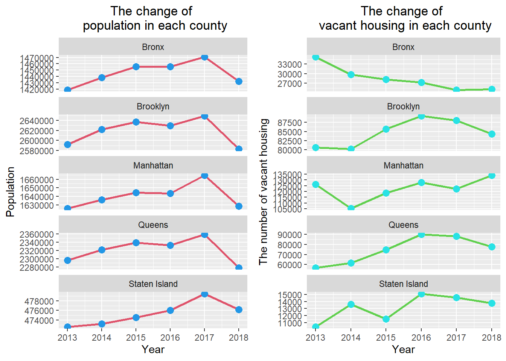

With the development of economy and urbanization, the dramatic changes of urban population have accelerated. This phenomenon is more common in megalopolises. People may move to cities for job opportunities or stay away from cities for better quality of life. At the same time as the population is changing, the house will switch between occupied and vacant. Meanwhile, housing prices will also be affected. In this research, we take the metropolitan area that New York City as an example, and show the plot and form of the changes in population, number of housing, housing value and household income in New York City. In addition, the method of regression analysis is used to explore the correlation between these variables. This study will propose three hypotheses: 1) The amount of urban population change is negatively related to the number of vacant houses;2) The value of the house is positively correlated with the income of the household; 3) The amount of change in urban population is positively correlated with house value. In order to verify the hypothesis, this study will use American Community Survey (ACS) Data from 2013-2018.
Data: 1)Demographic data set of New York city from 2013-2018 2)Housing data set of New York city from 2013-2018 3)Economic datas et of New York city from 2013-2018
All data sets comes from American Community Survey (ACS) Data Tables and are in csv format.
The processes are descried in following steps.
1.Download the data. 2.Extract attributes from the data sets and integrate them in a single data set. 3.Visualize data. 4.Correlation analysis. 5.Test hypothesis.
Load any required packages in a code chunk.
library(tidyverse)
library(leaflet)
library(kableExtra)
library(dplyr)
library(ggplot2)
library(corrplot)
library(cowplot)
knitr::opts_chunk$set(cache=TRUE) # cache the results for quick compilingoptions(scipen = 200)
datapath="./Dataset/NYC.csv"
nyc=read.csv(datapath)
nyc_whole<-nyc%>%filter(Area=="New York City")
each_county<-nyc%>%filter(Area!="New York City")nyc %>%
slice(1:10) %>% #show only 1:n rows
kable(digits=2,align="c")%>% #make table and round to two digits
kable_styling(bootstrap_options =
c("striped", "hover", "condensed", "responsive")) #apply other formatting| Area | Year | Total_population | Occupied_housing | Vacant_housing | Median_value | Median_income |
|---|---|---|---|---|---|---|
| New York City | 2018 | 8,398,748 | 3,184,496 | 334,957 | 645,100 | 63,799 |
| Bronx | 2018 | 1,432,132 | 507,370 | 25,139 | 436,100 | 38,467 |
| Brooklyn | 2018 | 2,582,830 | 969,317 | 84,350 | 759,400 | 61,220 |
| Manhattan | 2018 | 1,628,701 | 752,258 | 134,024 | 1,013,400 | 85,066 |
| Queens | 2018 | 2,278,906 | 788,110 | 77,699 | 577,400 | 69,320 |
| Staten Island | 2018 | 476,179 | 167,441 | 13,745 | 556,000 | 82,166 |
| New York City | 2017 | 8,622,698 | 3,159,674 | 337,670 | 609,500 | 97,836 |
| Bronx | 2017 | 1,471,160 | 503,985 | 24,866 | 400,300 | 55,423 |
| Brooklyn | 2017 | 2,648,771 | 956,223 | 88,064 | 701,800 | 87,312 |
| Manhattan | 2017 | 1,664,727 | 764,218 | 122,166 | 976,100 | 151,745 |
The change of the population and the number of vacant housing of NYC
p1<-nyc_whole%>%
ggplot(aes(x=Year,y=Total_population,group=Area))+geom_line(size=1,color=2)+geom_point(size=3,color=4)+ylab('Population')+labs(title = 'The change of population in NYC')+
theme(plot.title = element_text(hjust = 0.5))
p2<-nyc_whole%>%
ggplot(aes(x=Year,y=Vacant_housing,group=Area))+geom_line(size=1,color=3)+geom_point(size=3,color=5)+ylab('The number of vacant housing')+labs(title = 'The change of vacant housing in NYC')+
theme(plot.title = element_text(hjust = 0.5))
plot_grid(p1, p2)The change of population and the number of vacant housing of each county
p3<-each_county%>%
ggplot(aes(x=Year,y=Total_population,group=Area))+geom_line(size=1,color=2)+geom_point(size=3,color=4)+ylab('Population')+labs(title = 'The change of \n population in each county')+facet_wrap(~Area,scales="free_y",nrow=5,as.table = TRUE)+
theme(plot.title = element_text(hjust = 0.5))
p4<-each_county%>%ggplot(aes(x=Year,y=Vacant_housing,group=Area))+geom_line(size=1,color=3)+geom_point(size=3,color=5)+ylab('The number of vacant housing')+labs(title = 'The change of \n vacant housing in each county')+facet_wrap(~Area,scales="free_y",nrow=5,as.table = TRUE)+
theme(plot.title = element_text(hjust = 0.5))
plot_grid(p3, p4)
The change of median housing value and median household income of NYC
p5<-nyc_whole%>%
ggplot(aes(x=Year,y=Median_value,group=Area))+geom_line(size=1,color=2)+geom_point(size=3,color=4)+ylab('Median value(dollors)')+labs(title = 'The change of \n median value of housing in NYC')+
theme(plot.title = element_text(hjust = 0.5))
p6<-nyc_whole%>%
ggplot(aes(x=Year,y=Median_income,group=Area))+geom_line(size=1,color=3)+geom_point(size=3,color=5)+ylab('Median household income(dollors)')+labs(title = 'The change of \n median household income in NYC')+
theme(plot.title = element_text(hjust = 0.5))
plot_grid(p5, p6)The change of median housing value and median household income of each county
p7<-each_county%>%
ggplot(aes(x=Year,y=Median_value,group=Area))+geom_line(size=1,color=2)+geom_point(size=3,color=4)+ylab('Population')+labs(title = 'The change of median \n housing value in each county')+facet_wrap(~Area,scales="free_y",nrow=5,as.table = TRUE)+
theme(plot.title = element_text(hjust = 0.5))
p8<-each_county%>%ggplot(aes(x=Year,y=Median_income,group=Area))+geom_line(size=1,color=3)+geom_point(size=3,color=5)+ylab('The number of vacant housing')+labs(title = 'The change of median \n household income in each county')+facet_wrap(~Area,scales="free_y",nrow=5,as.table = TRUE)+
theme(plot.title = element_text(hjust = 0.5))
plot_grid(p7, p8)The change of population and median housing value of NYC
p9<-nyc_whole%>%
ggplot(aes(x=Year,y=Total_population,group=Area))+geom_line(size=1,color=2)+geom_point(size=3,color=4)+ylab('Median value(dollors)')+labs(title = 'The change of \n population in NYC')+
theme(plot.title = element_text(hjust = 0.5))
p10<-nyc_whole%>%
ggplot(aes(x=Year,y=Median_value,group=Area))+geom_line(size=1,color=3)+geom_point(size=3,color=5)+ylab('Median value(dollors)')+labs(title = 'The change of \n median value of housing in NYC')+
theme(plot.title = element_text(hjust = 0.5))
plot_grid(p9, p10)The change of population and median housing value of each county
p11<-each_county%>%
ggplot(aes(x=Year,y=Total_population,group=Area))+geom_line(size=1,color=2)+geom_point(size=3,color=4)+ylab('Population')+labs(title = 'The change of \n population in each county')+facet_wrap(~Area,scales="free_y",nrow=5,as.table = TRUE)+
theme(plot.title = element_text(hjust = 0.5))
p12<-each_county%>%ggplot(aes(x=Year,y=Median_value,group=Area))+geom_line(size=1,color=3)+geom_point(size=3,color=5)+ylab('Median value(dollors)')+labs(title = 'The change of median value \n of housing in each county')+facet_wrap(~Area,scales="free_y",nrow=5,as.table = TRUE)+
theme(plot.title = element_text(hjust = 0.5))
plot_grid(p11, p12)We use Pearson correlation cofficient to quantify the correlation between the two variables. When Pearson correlation cofficient approaches 1, it means that the two variables have a stronger positive correlation. When Pearson correlation cofficient approaches -1, it means that the two variables have a stronger negative correlation. When Pearson correlation cofficient approaches 0, that indicates the correlation between the two variables is weak.
population_vacant<-data.frame('Area'=c("New York City","Bronx","Brooklyn","Manhattan","Queens","Staten Island"),'Pearson correlation coefficient'=c(nyc_pop_vacant,bx_pop_vacant,bn_pop_vacant,mh_pop_vacant,q_pop_vacant,si_pop_vacant))
population_vacant%>%kable(digits=2,align="c",caption = "The pearson correlation cofficient between total of population and the number of vacant housing.",font_size = 17)%>%
kable_styling(bootstrap_options =
c("striped", "hover", "condensed", "responsive"))| Area | Pearson.correlation.coefficient |
|---|---|
| New York City | 0.31 |
| Bronx | -0.70 |
| Brooklyn | 0.56 |
| Manhattan | -0.18 |
| Queens | 0.51 |
| Staten Island | 0.86 |
value_income<-data.frame('Area'=c("New York City","Bronx","Brooklyn","Manhattan","Queens","Staten Island"),'Pearson correlation coefficient'=c(nyc_value_income,bx_value_income,bn_value_income,mh_value_income,q_value_income,si_value_income))
value_income%>%kable(digits=2,align="c",caption = "The pearson correlation cofficient between the median housing value and the median household income.",font_size = 17)%>%
kable_styling(bootstrap_options =
c("striped", "hover", "condensed", "responsive"))| Area | Pearson.correlation.coefficient |
|---|---|
| New York City | 0.62 |
| Bronx | 0.44 |
| Brooklyn | 0.63 |
| Manhattan | 0.40 |
| Queens | 0.76 |
| Staten Island | 0.64 |
pop_value<-data.frame('Area'=c("New York City","Bronx","Brooklyn","Manhattan","Queens","Staten Island"),'Pearson correlation coefficient'=c(nyc_pop_value,bx_pop_value,bn_pop_value,mh_pop_value,q_pop_value,si_pop_value))
pop_value%>%kable(digits=2,align="c",caption = "The pearson correlation cofficient between total of population and the median housing value.",font_size = 17)%>%
kable_styling(bootstrap_options =
c("striped", "hover", "condensed", "responsive"))| Area | Pearson.correlation.coefficient |
|---|---|
| New York City | 0.15 |
| Bronx | 0.03 |
| Brooklyn | -0.02 |
| Manhattan | 0.29 |
| Queens | -0.03 |
| Staten Island | 0.81 |
As the result of polts and tables, we can test the hypotheses.In the first hypothesis, we assume the amount of urban population change is negatively related to the number of vacant houses.From the study results,only the bronx county can fulfill this assumption. In the second hypothesis, we assume the value of the house is positively correlated with the income of the household.This assumption is basically true. In the third hypothesis, we can only find the amount of changing in urban population is positively correlated with house value in Manhattan and Staten Island.
http://www.sthda.com/english/wiki/correlation-test-between-two-variables-in-r. https://www1.nyc.gov/site/planning/index.page.